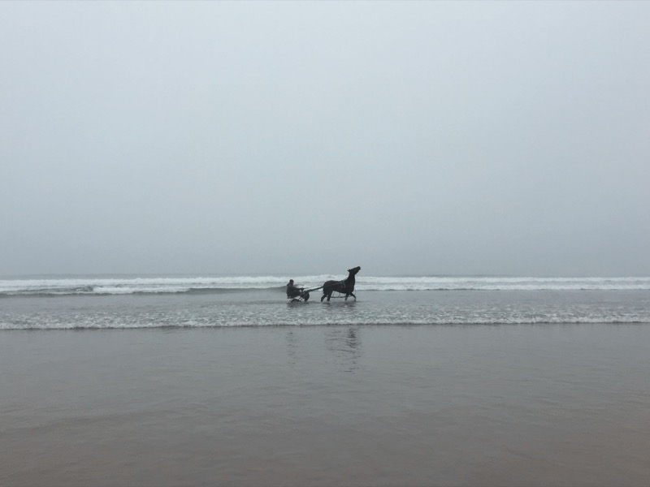

A field smock is perfect when you're in the mud, which is often how investing feels.

My name is Marc. I am frequently asked how it is I do what I do, or why it is I do what I do. So I might as well try to distill my thoughts in one place. The first thing to acknowledge is that there are many people better at this than me. I thank God that I even have this opportunity. I have been doing this for a short time and this is just my experience so far.
More for less
I started investing on the side while I had a full time job. Things changed when I started making more money investing than at my job. I do not believe in side hustles. I believe that if you are good at something and truly believe in it, you should make it your main hustle. Call it laziness or efficiency, but I am obsessed with maximising reward for the least amount of effort.
Price value
The real skill in investing is in price value. Everyone around you might be saying something is worth a certain price. It is your job to think critically based on first principles to discern what its true value is.
You have to be both contrarian and right. It is easy to be contrarian by disagreeing with everything. And it is easy to be right by agreeing with obvious things. But it is very difficult to be both contrarian and right.
Growing up, my dad used to tell me that nowadays people know the price of everything and the value of nothing. He was making a point about materialism and what really matters in life, but it is applicable to investing too. My full time job is finding and capitalising on the difference between price and value.
The underdog
It is also the story of believing in a company when nobody else does. Rooting for the underdog. Supporting the right people who are overlooked, when everyone else says you shouldn't. This speaks deeply to me. I did not do well as a kid in the school system. I scraped by with my exams and most of my teachers disliked me. But the teachers and people that did believe in me, I remember forever.
Venturing into the unknown is what it takes to obtain true reward. Not being comfortable in what is known. It is a call to adventure and you have to risk what you have in order to experience what is to come.
Pain and courage
Hard work pays. But hard work with courage pays off. Courage to act on an opportunity. Courage to act when people might be telling you it is wrong, but you know it is right. Find something hard and important that no one else wants to do. Be courageous, and do it. It will be painful, but worth it.
Ayrton Senna said, 'If you no longer go for a gap that exists, you're no longer a racing driver.' I think about this a lot. And it certainly applies to life beyond racing. Have the courage to go for the gap.